pacman::p_load(sf, sfdep, tmap, lubridate, plotly, tidyverse, ggplot2, Kendall)Take Home Exercise 2 : Discovering impacts of COVID-19 on Thailand tourism economy at the province level using spatial and spatio-temporal statistics
1. Setting the Scene
Tourism is one of Thailand’s largest industries, accounting for some 20% of the gross domestic product (GDP). In 2019, Thailand earned 90 billion US$ from domestic and international tourism, but the COVID-19 pandemic caused revenues to crash to 24 billion US$ in 2020.
Figure below shows the total revenue receipt from tourism sector from January 2019 until Feb 2023. The figure reveals that the revenue from tourism industry have been recovered gradually since September 2021.
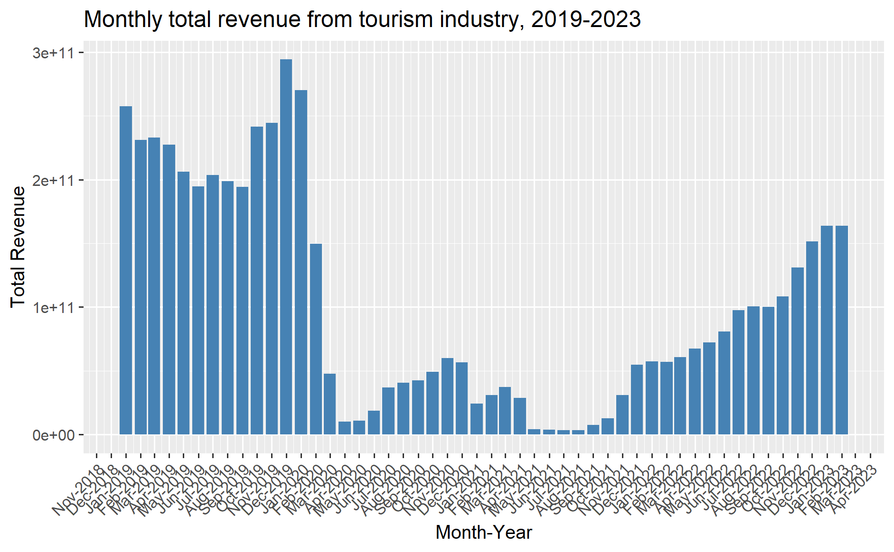
However, it is important to note that the tourism economy of Thailand are not evenly distributed. Figure below reveals that the tourism economy of Thailand are mainly focus on five provinces, namely Bangkok, Phuket, Chiang Mai, Sukhothai and Phetchaburi.

2. Objectives
As a a curious geospatial analytics green horn, we are interested to discover:
if the key indicators of tourism economy of Thailand are independent from space and space and time.
If the tourism economy is indeed spatial and spatio-temporal dependent, then, you would like to detect where are the clusters and outliers, and the emerging hot spot/cold spot areas.
3. The Task
The specific tasks of this take-home exercise are as follows:
Using appropriate function of sf and tidyverse, preparing the following geospatial data layer: a study area layer in sf polygon features. It must be at province level (including Bangkok) of Thailand. a tourism economy indicators layer within the study area in sf polygon features. a derived tourism economy indicator layer in spacetime s3 class of sfdep. Keep the time series at month and year levels. Using the extracted data, perform global spatial autocorrelation analysis by using sfdep methods. Using the extracted data, perform local spatial autocorrelation analysis by using sfdep methods. Using the extracted data, perform emerging hotspot analysis by using sfdep methods. Describe the spatial patterns revealed by the analysis above.
4. The Data
For the purpose of this take-home exercise, two data sets shall be used, they are:
Thailand Domestic Tourism Statistics at Kaggle. You are required to use version 2 of the data set.
Thailand - Subnational Administrative Boundaries at HDX. You are required to use the province boundary data set.
5. Importing Packages
Before we start the exercise, we will need to import necessary R packages first. We will use the following packages:
sf package provides functions to manage, processing, and manipulate Simple Features, a formal geospatial data standard that specifies a storage and access model of spatial geometries such as points, lines, and polygons.
tmap which provides functions for plotting cartographic quality static point patterns maps or interactive maps by using leaflet API.
sfdep which provide functions for utilizes list columns extensively to make this interface possible.
smoothr which provide functions for smoothing and tidying spatial features (i.e. lines and polygons) to make them more aesthetically pleasing.
lubridate which provide functions to work with date-times and time-spans: fast and user friendly parsing of date-time data, extraction and updating of components of a date-time (years, months, days, hours, minutes, and seconds), algebraic manipulation on date-time and time-span objects.
ggplot2which create advanced visualisations, graphics and maps using the Grammar of Graphics.Kendallwhich compute the Kendall rank correlation and Mann-Kendall trend test.Use the code chunk below to install and launch the below R packages.
6. Getting the Data Into R Environment
In this section, we will learn how to bring a geospatial data and its associated attribute table into R environment. The geospatial data is in ESRI shapefile format and the attribute table is in csv fomat.
6.1 Import shapefile into r environment
6.1.1 Thailand Domestic Tourism Statistics
tourism_data <- read_csv("data/rawdata/thailand_domestic_tourism_2019_2023_ver2.csv")glimpse(tourism_data)Rows: 30,800
Columns: 7
$ date <date> 2019-01-01, 2019-01-01, 2019-01-01, 2019-01-01, 2019-01…
$ province_thai <chr> "กรุงเทพมหานคร", "ลพบุรี", "พระนครศรีอยุธยา", "สระบุรี", "ชัยนาท…
$ province_eng <chr> "Bangkok", "Lopburi", "Phra Nakhon Si Ayutthaya", "Sarab…
$ region_thai <chr> "ภาคกลาง", "ภาคกลาง", "ภาคกลาง", "ภาคกลาง", "ภาคกลาง", "…
$ region_eng <chr> "central", "central", "central", "central", "central", "…
$ variable <chr> "ratio_tourist_stay", "ratio_tourist_stay", "ratio_touri…
$ value <dbl> 93.37, 61.32, 73.37, 67.33, 79.31, 71.70, 64.65, 71.21, …tourism_data$variable <- as.factor(tourism_data$variable)
levels(tourism_data$variable)[1] "no_tourist_all" "no_tourist_foreign" "no_tourist_stay"
[4] "no_tourist_thai" "ratio_tourist_stay" "revenue_all"
[7] "revenue_foreign" "revenue_thai" Variables:
no_tourist_all |
The total number of domestic tourists who visited the province |
no_tourist_foreign |
The number of foreign tourists who visited the province |
no_tourist_stay |
The number of tourists who stay over-night |
no_tourist_thai |
The number of Thai tourists who visited the province |
ratio_tourist_stay |
The ratio of tourist stay over-night. |
revenue_all |
The revenue generated by the tourism industry in the province, in Thai Baht |
revenue_foreign |
The revenue generated by foreign tourists in the province, in Thai Baht |
revenue_thai |
The revenue generated by Thai tourists in the province, in Thai Baht |
6.1.1.2 Reshape the Data
Use pivot_wider to create new columns based on the variables in Column F, using Column G as the values.
tourism_data_wide <- tourism_data %>%
pivot_wider(
names_from = variable,
values_from = value,
values_fill = NA # Fill missing values with NA
) #%>%
#filter(!is.na(revenue_all) & revenue_all != 0)
tourism_data_wide# A tibble: 3,850 × 13
date province_thai province_eng region_thai region_eng
<date> <chr> <chr> <chr> <chr>
1 2019-01-01 กรุงเทพมหานคร Bangkok ภาคกลาง central
2 2019-01-01 ลพบุรี Lopburi ภาคกลาง central
3 2019-01-01 พระนครศรีอยุธยา Phra Nakhon Si Ayutthaya ภาคกลาง central
4 2019-01-01 สระบุรี Saraburi ภาคกลาง central
5 2019-01-01 ชัยนาท Chainat ภาคกลาง central
6 2019-01-01 นครปฐม Nakhon Pathom ภาคกลาง central
7 2019-01-01 สิงห์บุรี Sing Buri ภาคกลาง central
8 2019-01-01 อ่างทอง Ang Thong ภาคกลาง central
9 2019-01-01 นนทบุรี Nonthaburi ภาคกลาง central
10 2019-01-01 ปทุมธานี Pathum Thani ภาคกลาง central
# ℹ 3,840 more rows
# ℹ 8 more variables: ratio_tourist_stay <dbl>, no_tourist_stay <dbl>,
# no_tourist_all <dbl>, no_tourist_thai <dbl>, no_tourist_foreign <dbl>,
# revenue_all <dbl>, revenue_thai <dbl>, revenue_foreign <dbl>6.1.1.2 Select Relevant Columns
After reshaping, select only the relevant columns (revenue_all) for your analysis. Also, create new columns for year, month, day, month factor and month-year.
tourism_data_new <- tourism_data_wide %>%
select(date, province_thai, province_eng, region_eng, revenue_all) %>%
mutate(
continuous_month = (as.numeric(format(date, "%Y")) - 2019) * 12 + as.numeric(format(date, "%m")),
Year_num = year(date), # Extract the year
Month_num = month(date), # Extract numeric month
Month_fac = month(date, label = TRUE, abbr = TRUE), # Extract abbreviated month as factor
Month_year = factor(format(date, "%b-%Y"),
levels = format(seq(min(date), max(date), by = "month"), "%b-%Y")) # Create 'month-year' string
)
print(tourism_data_new)# A tibble: 3,850 × 10
date province_thai province_eng region_eng revenue_all continuous_month
<date> <chr> <chr> <chr> <dbl> <dbl>
1 2019-01-01 กรุงเทพมหานคร Bangkok central 81926490000 1
2 2019-01-01 ลพบุรี Lopburi central 457240000 1
3 2019-01-01 พระนครศรีอยุธยา Phra Nakhon… central 1438730000 1
4 2019-01-01 สระบุรี Saraburi central 347790000 1
5 2019-01-01 ชัยนาท Chainat central 101790000 1
6 2019-01-01 นครปฐม Nakhon Path… central 407980000 1
7 2019-01-01 สิงห์บุรี Sing Buri central 69610000 1
8 2019-01-01 อ่างทอง Ang Thong central 132070000 1
9 2019-01-01 นนทบุรี Nonthaburi central 527420000 1
10 2019-01-01 ปทุมธานี Pathum Thani central 307920000 1
# ℹ 3,840 more rows
# ℹ 4 more variables: Year_num <dbl>, Month_num <dbl>, Month_fac <ord>,
# Month_year <fct>6.1.2 Thailand - Subnational Administrative Boundaries
# Load province boundaries
provinces <- st_read(dsn = "data/rawdata",
layer = "tha_admbnda_adm1_rtsd_20220121") %>%
st_transform(crs = 32647) %>%
mutate(ADM1_EN = recode(ADM1_EN, # Update province boundaries' name
"Lop Buri" = "Lopburi",
"Chai Nat" = "Chainat",
"Chon Buri" = "Chonburi",
"Prachin Buri" = "Prachinburi",
"Phangnga" = "Phang Nga",
"Buri Ram" = "Buriram",
"Si Sa Ket" = "Sisaket",
"Nong Bua Lam Phu" = "Nong Bua Lamphu"
))Reading layer `tha_admbnda_adm1_rtsd_20220121' from data source
`C:\Users\user\OneDrive - Singapore Management University\MITB\6. Geospatial Analytics and Applications\jeffleesl\ISSS626-GAA\Take-Home_Ex\Take-Home_Ex02\data\rawdata'
using driver `ESRI Shapefile'
Simple feature collection with 77 features and 16 fields
Geometry type: MULTIPOLYGON
Dimension: XY
Bounding box: xmin: 97.34336 ymin: 5.613038 xmax: 105.637 ymax: 20.46507
Geodetic CRS: WGS 84# Load province boundaries
glimpse(provinces)Rows: 77
Columns: 17
$ Shape_Leng <dbl> 2.417227, 1.695100, 1.251111, 1.884945, 3.041716, 1.739908,…
$ Shape_Area <dbl> 0.13133873, 0.07926199, 0.05323766, 0.12698345, 0.21393797,…
$ ADM1_EN <chr> "Bangkok", "Samut Prakan", "Nonthaburi", "Pathum Thani", "P…
$ ADM1_TH <chr> "กรุงเทพมหานคร", "สมุทรปราการ", "นนทบุรี", "ปทุมธานี", "พระนครศรีอ…
$ ADM1_PCODE <chr> "TH10", "TH11", "TH12", "TH13", "TH14", "TH15", "TH16", "TH…
$ ADM1_REF <chr> NA, NA, NA, NA, NA, NA, NA, NA, NA, NA, NA, NA, NA, NA, NA,…
$ ADM1ALT1EN <chr> NA, NA, NA, NA, NA, NA, NA, NA, NA, NA, NA, NA, NA, NA, NA,…
$ ADM1ALT2EN <chr> NA, NA, NA, NA, NA, NA, NA, NA, NA, NA, NA, NA, NA, NA, NA,…
$ ADM1ALT1TH <chr> NA, NA, NA, NA, NA, NA, NA, NA, NA, NA, NA, NA, NA, NA, NA,…
$ ADM1ALT2TH <chr> NA, NA, NA, NA, NA, NA, NA, NA, NA, NA, NA, NA, NA, NA, NA,…
$ ADM0_EN <chr> "Thailand", "Thailand", "Thailand", "Thailand", "Thailand",…
$ ADM0_TH <chr> "ประเทศไทย", "ประเทศไทย", "ประเทศไทย", "ประเทศไทย", "ประเทศ…
$ ADM0_PCODE <chr> "TH", "TH", "TH", "TH", "TH", "TH", "TH", "TH", "TH", "TH",…
$ date <date> 2019-02-18, 2019-02-18, 2019-02-18, 2019-02-18, 2019-02-18…
$ validOn <date> 2022-01-22, 2022-01-22, 2022-01-22, 2022-01-22, 2022-01-22…
$ validTo <date> -001-11-30, -001-11-30, -001-11-30, -001-11-30, -001-11-30…
$ geometry <MULTIPOLYGON [m]> MULTIPOLYGON (((674339.8 15..., MULTIPOLYGON (…tm_shape(provinces) +
tm_polygons()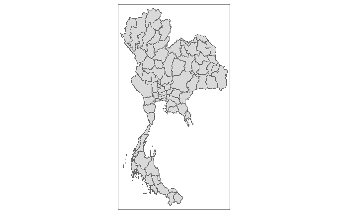
## Convert to multipolygon to individual polygon
provinces_sf <- provinces %>%
st_cast("POLYGON") %>%
mutate(area = st_area(.))## Group by the unique name and select the largest polygon by area
provinces_cleaned <- provinces_sf %>%
group_by(ADM1_EN) %>%
filter(area == max(area)) %>%
ungroup() %>%
select(-area) %>%
select(ADM1_EN)tm_shape(provinces_cleaned) +
tm_polygons()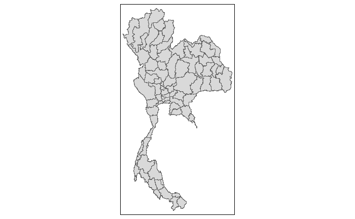
6.2 Performing relational join
The code chunk below will be used to update the attribute table of provinces’ SpatialPolygonsDataFrame with the attribute fields of tourismdatanew dataframe. This is performed by using left_join() of dplyr package.
6.2.1 Using Province in English
# Left join to add geometries from thailand boundaries shapefile
tourism_sf <- tourism_data_new %>%
left_join(provinces_cleaned, by = c("province_eng" = "ADM1_EN"))
# Ensure the data is a valid sf object
tourism_sf <- st_as_sf(tourism_sf)
# Check if transformation was successful
st_crs(tourism_sf)Coordinate Reference System:
User input: EPSG:32647
wkt:
PROJCRS["WGS 84 / UTM zone 47N",
BASEGEOGCRS["WGS 84",
ENSEMBLE["World Geodetic System 1984 ensemble",
MEMBER["World Geodetic System 1984 (Transit)"],
MEMBER["World Geodetic System 1984 (G730)"],
MEMBER["World Geodetic System 1984 (G873)"],
MEMBER["World Geodetic System 1984 (G1150)"],
MEMBER["World Geodetic System 1984 (G1674)"],
MEMBER["World Geodetic System 1984 (G1762)"],
MEMBER["World Geodetic System 1984 (G2139)"],
ELLIPSOID["WGS 84",6378137,298.257223563,
LENGTHUNIT["metre",1]],
ENSEMBLEACCURACY[2.0]],
PRIMEM["Greenwich",0,
ANGLEUNIT["degree",0.0174532925199433]],
ID["EPSG",4326]],
CONVERSION["UTM zone 47N",
METHOD["Transverse Mercator",
ID["EPSG",9807]],
PARAMETER["Latitude of natural origin",0,
ANGLEUNIT["degree",0.0174532925199433],
ID["EPSG",8801]],
PARAMETER["Longitude of natural origin",99,
ANGLEUNIT["degree",0.0174532925199433],
ID["EPSG",8802]],
PARAMETER["Scale factor at natural origin",0.9996,
SCALEUNIT["unity",1],
ID["EPSG",8805]],
PARAMETER["False easting",500000,
LENGTHUNIT["metre",1],
ID["EPSG",8806]],
PARAMETER["False northing",0,
LENGTHUNIT["metre",1],
ID["EPSG",8807]]],
CS[Cartesian,2],
AXIS["(E)",east,
ORDER[1],
LENGTHUNIT["metre",1]],
AXIS["(N)",north,
ORDER[2],
LENGTHUNIT["metre",1]],
USAGE[
SCOPE["Navigation and medium accuracy spatial referencing."],
AREA["Between 96°E and 102°E, northern hemisphere between equator and 84°N, onshore and offshore. China. Indonesia. Laos. Malaysia - West Malaysia. Mongolia. Myanmar (Burma). Russian Federation. Thailand."],
BBOX[0,96,84,102]],
ID["EPSG",32647]]6.2.2 Using Province in Thai (Showing Other Method)
# Left join to add geometries from thailand boundaries shapefile
tourism_sf_th <- tourism_data_new %>%
left_join(provinces, by = c("province_thai" = "ADM1_TH"))
# Ensure the data is a valid sf object
tourism_sf_th <- st_as_sf(tourism_sf_th)
# Check if transformation was successful
st_crs(tourism_sf_th)7.Derived Tourism Economy Indicator Layer
It is always a good practice to use set.seed() before performing simulation. This is to ensure that the computation is reproducible.
set.seed(1234)7.1 Plotting a choropleth map
Plot a choropleth map showing the distribution of revenue generated by the tourism industry in the different province, in Thai Baht
7.1.1 Split into pre-covid (Year 2019), during covid (Year 2020-2022) and post covid (year 2023)
# Filter for the year 2019
tourism_sf_2019 <- tourism_sf %>%
filter(Year_num == 2019)
# Filter for the year 2020
tourism_sf_2020 <- tourism_sf %>%
filter(Year_num == 2020)
# Filter for the year 2021
tourism_sf_2021 <- tourism_sf %>%
filter(Year_num == 2021)
# Filter for the year 2022
tourism_sf_2022 <- tourism_sf %>%
filter(Year_num == 2022)
# Filter for the year 2023
tourism_sf_2023 <- tourism_sf %>%
filter(Year_num == 2023)7.1.1.1 Pre-COVID (Year 2019)
tmap_mode("plot")
tm_shape(tourism_sf_2019) +
tm_fill("revenue_all",
style = "quantile",
palette = "Blues",
title = "Total Revenue") +
tm_borders(col = "grey") +
tm_facets("Month_year") +
tm_layout(main.title = "Distribution of revenue generated by the tourism industry \n in the different provinces in Year 2019 (Pre-COVID)",
main.title.position = "center",
main.title.size = 1.2,
legend.height = 0.45,
legend.width = 0.35,
frame = TRUE)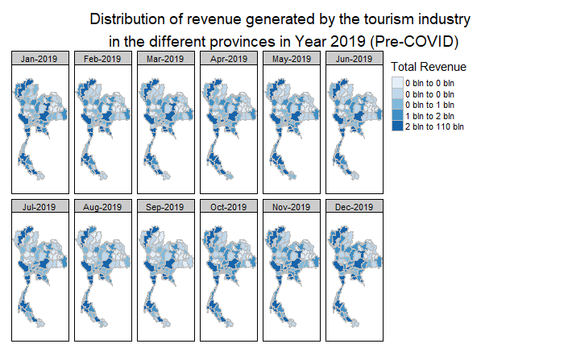
7.1.1.2 During COVID (Year 2020-2022)
tmap_mode("plot")
tm_shape(tourism_sf_2020) +
tm_fill("revenue_all",
style = "quantile",
palette = "Oranges",
title = "Total Revenue") +
tm_borders(col = "grey") +
tm_facets("Month_year") +
tm_layout(main.title = "Distribution of revenue generated by the tourism industry \n in the different provinces in Year 2020 (During COVID)",
main.title.position = "center",
main.title.size = 1.2,
legend.height = 0.45,
legend.width = 0.35,
frame = TRUE)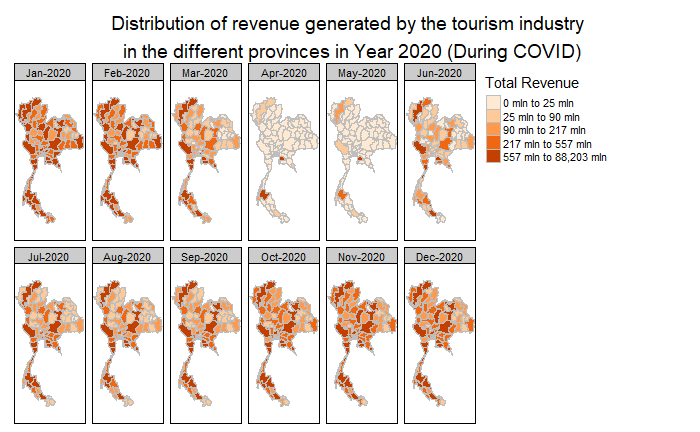
tmap_mode("plot")
tm_shape(tourism_sf_2021) +
tm_fill("revenue_all",
style = "quantile",
palette = "Greens",
title = "Total Revenue") +
tm_borders(col = "grey") +
tm_facets("Month_year") +
tm_layout(main.title = "Distribution of revenue generated by the tourism industry \n in the different provinces in Year 2021 (During COVID)",
main.title.position = "center",
main.title.size = 1.2,
legend.height = 0.45,
legend.width = 0.35,
frame = TRUE)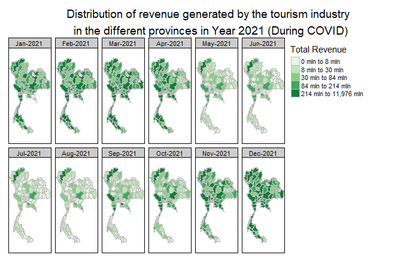
tmap_mode("plot")
tm_shape(tourism_sf_2022) +
tm_fill("revenue_all",
style = "quantile",
palette = "Reds",
title = "Total Revenue") +
tm_borders(col = "grey") +
tm_facets("Month_year") +
tm_layout(main.title = "Distribution of revenue generated by the tourism industry \n in the different provinces in Year 2022 (During COVID)",
main.title.position = "center",
main.title.size = 1.2,
legend.height = 0.45,
legend.width = 0.35,
frame = TRUE)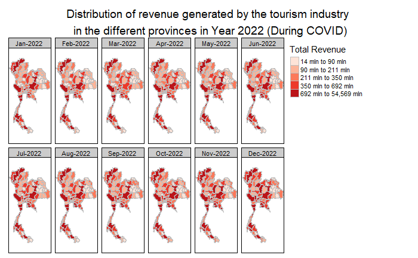
7.1.1.3 Post COVID (Year 2023)
#| fig-width: 10
#| fig-height: 10
tmap_mode("plot")
tm_shape(tourism_sf_2023) +
tm_fill("revenue_all",
style = "quantile",
palette = "Purples",
title = "Total Revenue") +
tm_borders(col = "grey") +
tm_facets("Month_year") +
tm_layout(main.title = "Distribution of revenue generated by the tourism industry \n in the different provinces in Year 2023 (Post COVID)",
main.title.position = "center",
main.title.size = 1.2,
legend.height = 0.45,
legend.width = 0.35,
frame = TRUE)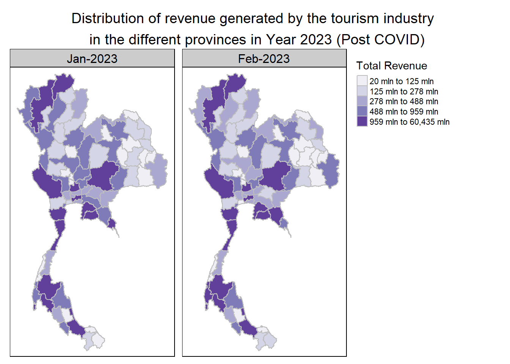

7.1.2 Calculate the Average Revenue for Each Province
# Calculate the average revenue_all for each province
# Year 2019
tourism_sf_avg_2019 <- tourism_sf_2019 %>%
group_by(province_thai) %>%
summarize(average_revenue_all = mean(revenue_all, na.rm = TRUE))
# Year 2020
tourism_sf_avg_2020 <- tourism_sf_2020 %>%
group_by(province_thai) %>%
summarize(average_revenue_all = mean(revenue_all, na.rm = TRUE))
# Year 2021
tourism_sf_avg_2021 <- tourism_sf_2021 %>%
group_by(province_thai) %>%
summarize(average_revenue_all = mean(revenue_all, na.rm = TRUE))
# Year 2022
tourism_sf_avg_2022 <- tourism_sf_2022 %>%
group_by(province_thai) %>%
summarize(average_revenue_all = mean(revenue_all, na.rm = TRUE))
# Year 2022
tourism_sf_avg_2023 <- tourism_sf_2023 %>%
group_by(province_thai) %>%
summarize(average_revenue_all = mean(revenue_all, na.rm = TRUE))7.1.3 Join the Average Revenue Back to the Spatial Data
# Join the average revenue back to the spatial data
# Year 2019
tourism_sf_avg_2019 <- left_join(st_drop_geometry(tourism_sf_2019), tourism_sf_avg_2019, by = "province_thai")
tourism_sf_avg_2019 <- st_as_sf(tourism_sf_avg_2019)
# Year 2020
tourism_sf_avg_2020 <- left_join(st_drop_geometry(tourism_sf_2020), tourism_sf_avg_2020, by = "province_thai")
tourism_sf_avg_2020 <- st_as_sf(tourism_sf_avg_2020)
# Year 2021
tourism_sf_avg_2021 <- left_join(st_drop_geometry(tourism_sf_2021), tourism_sf_avg_2021, by = "province_thai")
tourism_sf_avg_2021 <- st_as_sf(tourism_sf_avg_2021)
# Year 2022
tourism_sf_avg_2022 <- left_join(st_drop_geometry(tourism_sf_2022), tourism_sf_avg_2022, by = "province_thai")
tourism_sf_avg_2022 <- st_as_sf(tourism_sf_avg_2022)
# Year 2023
tourism_sf_avg_2023 <- left_join(st_drop_geometry(tourism_sf_2023), tourism_sf_avg_2023, by = "province_thai")
tourism_sf_avg_2023 <- st_as_sf(tourism_sf_avg_2023)7.1.4 Modify the Plot Code to Use average_revenue_all
7.1.4.1 Pre-COVID (Year 2019)
tmap_mode("plot")
tm_shape(tourism_sf_avg_2019) +
tm_fill("average_revenue_all", # Use average revenue
style = "quantile", # Use quantile classification
palette = "Blues", # Choose color palette
title = "Average Revenue (All)") +
tm_borders(col = "grey") +
tm_facets("Month_year") +
tm_layout(main.title = "Average Revenue Generated by Tourism Industry in \n Different Provinces in Year 2019 (Pre-COVID)",
main.title.position = "center",
main.title.size = 1.2,
legend.height = 0.45,
legend.width = 0.35,
frame = TRUE)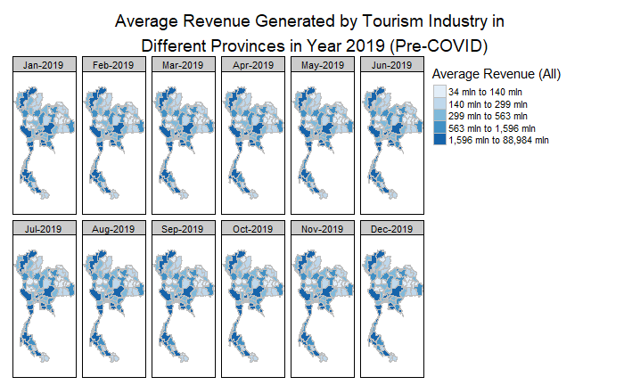
7.1.1.2 During COVID (Year 2020-2022)
tmap_mode("plot")
tm_shape(tourism_sf_avg_2020) +
tm_fill("average_revenue_all", # Use average revenue
style = "quantile", # Use quantile classification
palette = "Oranges", # Choose color palette
title = "Average Revenue (All)") +
tm_borders(col = "grey") +
tm_facets("Month_year") +
tm_layout(main.title = "Average Revenue Generated by Tourism Industry in \n Different Provinces in Year 2020 (During COVID)",
main.title.position = "center",
main.title.size = 1.2,
legend.height = 0.45,
legend.width = 0.35,
frame = TRUE)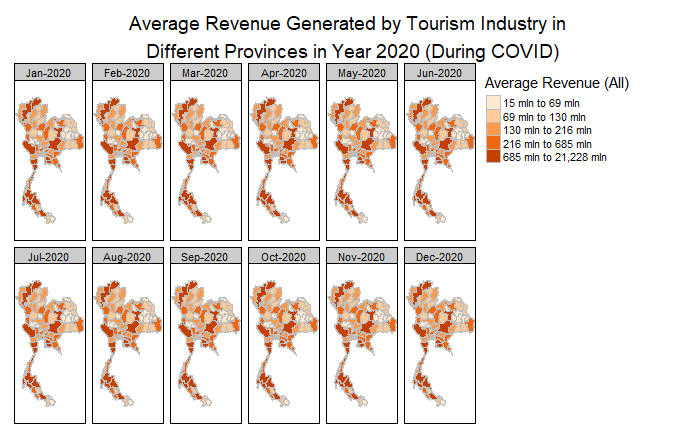
tmap_mode("plot")
tm_shape(tourism_sf_avg_2021) +
tm_fill("average_revenue_all", # Use average revenue
style = "quantile", # Use quantile classification
palette = "Greens", # Choose color palette
title = "Average Revenue (All)") +
tm_borders(col = "grey") +
tm_facets("Month_year") +
tm_layout(main.title = "Average Revenue Generated by Tourism Industry in \n Different Provinces in Year 2021 (During COVID)",
main.title.position = "center",
main.title.size = 1.2,
legend.height = 0.45,
legend.width = 0.35,
frame = TRUE)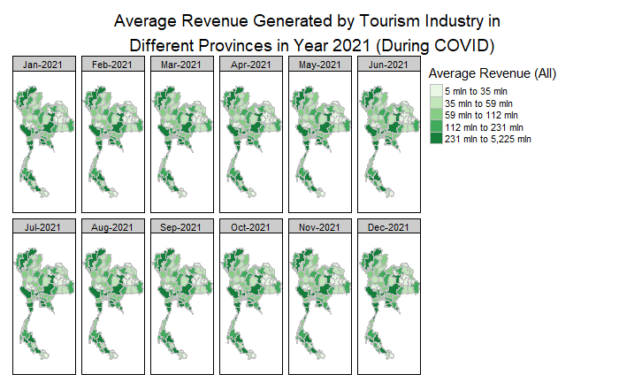
tmap_mode("plot")
tm_shape(tourism_sf_avg_2022) +
tm_fill("average_revenue_all", # Use average revenue
style = "quantile", # Use quantile classification
palette = "Reds", # Choose color palette
title = "Average Revenue (All)") +
tm_borders(col = "grey") +
tm_facets("Month_year") +
tm_layout(main.title = "Average Revenue Generated by Tourism Industry in \n Different Provinces in Year 2022 (During COVID)",
main.title.position = "center",
main.title.size = 1.2,
legend.height = 0.45,
legend.width = 0.35,
frame = TRUE)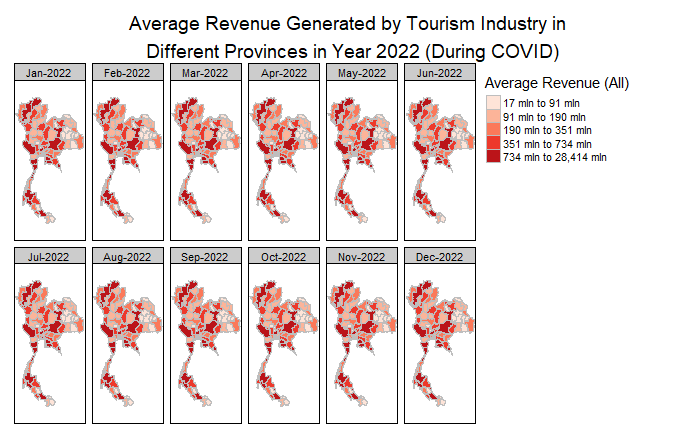
7.1.1.3 Post COVID (Year 2023)
tmap_mode("plot")
tm_shape(tourism_sf_avg_2023) +
tm_fill("average_revenue_all", # Use average revenue
style = "quantile", # Use quantile classification
palette = "Purples", # Choose color palette
title = "Average Revenue (All)") +
tm_borders(col = "grey") +
tm_facets("Month_year") +
tm_layout(main.title = "Average Revenue Generated by Tourism Industry in \n Different Provinces in Year 2023 (Post COVID)",
main.title.position = "center",
main.title.size = 1.2,
legend.height = 0.45,
legend.width = 0.35,
frame = TRUE)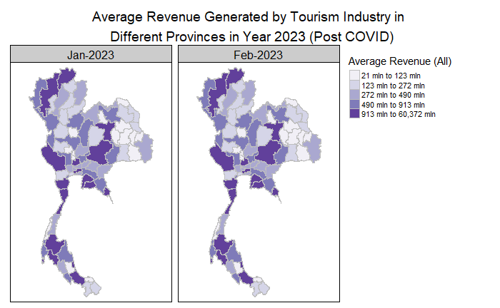
9. Global Spatial Autocorrelation Analysis
The analysis highlights that revenue and average revenue generated by the tourism industry were significantly higher in the pre-COVID period (Year 2019) compared to the COVID period and the post-COVID period (Year 2020-2023). The tourism board would likely aim to restore revenue levels to those observed before the pandemic. Before proceeding to the Global Spatial Autocorrelation Analysis, it is advisable to use the average revenue generated by the tourism industry in 2019 as a benchmark.
tourism_sf_2019 <- tourism_sf_2019[!st_is_empty(tourism_sf_2019$geometry), , drop = FALSE]class(tourism_sf_2019) # check if the class is an sf object[1] "sf" "tbl_df" "tbl" "data.frame"glimpse(tourism_sf_2019) #confirm that the geometry column exists and is an sfc (simple feature geometry)Rows: 924
Columns: 11
$ date <date> 2019-01-01, 2019-01-01, 2019-01-01, 2019-01-01, 2019…
$ province_thai <chr> "กรุงเทพมหานคร", "ลพบุรี", "พระนครศรีอยุธยา", "สระบุรี", "ชัย…
$ province_eng <chr> "Bangkok", "Lopburi", "Phra Nakhon Si Ayutthaya", "Sa…
$ region_eng <chr> "central", "central", "central", "central", "central"…
$ revenue_all <dbl> 81926490000, 457240000, 1438730000, 347790000, 101790…
$ continuous_month <dbl> 1, 1, 1, 1, 1, 1, 1, 1, 1, 1, 1, 1, 1, 1, 1, 1, 1, 1,…
$ Year_num <dbl> 2019, 2019, 2019, 2019, 2019, 2019, 2019, 2019, 2019,…
$ Month_num <dbl> 1, 1, 1, 1, 1, 1, 1, 1, 1, 1, 1, 1, 1, 1, 1, 1, 1, 1,…
$ Month_fac <ord> Jan, Jan, Jan, Jan, Jan, Jan, Jan, Jan, Jan, Jan, Jan…
$ Month_year <fct> Jan-2019, Jan-2019, Jan-2019, Jan-2019, Jan-2019, Jan…
$ geometry <POLYGON [m]> POLYGON ((674339.8 1543300,..., POLYGON ((751…#wm_q <- tourism_sf_avg_2019 %>%
#mutate(
#nb = list(st_contiguity(geometry)), # Wrap in `list` to store complex objects
#wt = list(st_weights(nb[[1]], style = "W")), # Use extracted neighbors
#.before = 1
#)9.1 Deriving Queen’s contiguity weights: sfdep methods
#wm_q <- tourism_sf_2019 %>%
#mutate(
#nb = st_contiguity(geometry), # Calculate neighbors using Queen's contiguity
#wt = st_weights(nb, style = "W"), # Calculate weights with style "W", allowing zero for zones without neighbors
#.before = 1
#)#wm_q <- tourism_sf_avg_2019 %>%
#mutate(
#nb = st_contiguity(geometry), # Calculate neighbors using Queen's contiguity
#wt = st_weights(nb, style = "W", allow_zero = TRUE), # Calculate weights with style "W", allowing zero for zones without neighbors
#.before = 1
#)#wm_q <- tourism_sf %>%
#mutate(nb = st_contiguity(geometry),
# wt = st_weights(nb, style = "W")) %>%
# select(nb, wt, everything()) #tourism_q <- st_contiguity (tourism_sf, queen=TRUE)
#summary(wm_q)#tourism_wm_rs <- st_weights(tourism_q, style="W")#wm_q <- tourism_sf %>%
# mutate(nb = tourism_q,
# wt = tourism_wm_rs,
# .before = 1) #wm_q9.2 Computing Global Moran’ I
In the code chunk below, global_moran() function is used to compute the Moran’s I value. Different from spdep package, the output is a tibble data.frame.
#moranI <- global_moran(wm_q$revenue_all,
# wm_q$nb,
# wm_q$wt)
#glimpse(moranI)9.3 Performing Global Moran’sI test
In general, Moran’s I test will be performed instead of just computing the Moran’s I statistics. With sfdep package, Moran’s I test can be performed by using global_moran_test() as shown in the code chunk below.
#global_moran_test(wm_q$revenue_all,
# wm_q$nb,
# wm_q$wt)9.4 Global Moran’I permutation test
Next, global_moran_perm() is used to perform Monte Carlo simulation.
#global_moran_perm(wm_q$revenue_all,
# wm_q$nb,
# wm_q$wt,
# nsim =99)The statistical report on previous tab shows that the p-value is smaller than alpha value of 0.05. Hence, we have enough statistical evidence to reject the null hypothesis that the spatial distribution of total revenue are resemble random distribution (i.e. independent from spatial). Because the Moran’s I statistics is greater than 0. We can infer that the spatial distribution shows sign of clustering.
# Global Moran's I for tourism data
#global_moran_test <- tourism_sf %>%
#global_moran(variable = "no_tourist_all", nb = tourism_neighbors)
# Print the results
#global_moran_test10. Local Spatial Autocorrelation Analysis
10.1 Computing local Moran’s I
In this section, we compute Local Moran’s I of total revenue at province level by using local_moran() of sfdep package.
#lisa <- wm_q %>%
# mutate(local_moran = local_moran(
# revenue_all, nb, wt, nsim = 99),
# .before = 1) %>%
# unnest(local_moran)10.2 Visualising local Moran’s I
In this code chunk below, tmap functions are used prepare a choropleth map by using value in the ii field.
#tmap_mode("plot")
#tm_shape(lisa) +
# tm_fill("ii") +
#tm_borders(alpha = 0.5) +
# tm_facets("Month_year") +
# tm_view(set.zoom.limits = c(6,8)) +
# tm_layout(
# main.title = "local Moran's I of Total Revenue",
# main.title.size = 2)10.3 Visualising p-value of local Moran’s I
#tmap_mode("plot")
#tm_shape(lisa) +
#tm_fill("p_ii_sim") +
#tm_borders(alpha = 0.5) +
#tm_facets("Month_year") +
#tm_layout(
# main.title = "p-values of local Moran's I",
# main.title.size = 2)10.4 Visualising local Moran’s I and p-value
#tmap_mode("plot")
#map1 <- tm_shape(lisa) +
# tm_fill("ii") +
# tm_borders(alpha = 0.5) +
# tm_facets("Month_year") +
# tm_view(set.zoom.limits = c(6,8)) +
# tm_layout(main.title = "local Moran's I of Total Revenue",
# main.title.size = 0.8)
#map2 <- tm_shape(lisa) +
#tm_fill("p_ii",
# breaks = c(0, 0.001, 0.01, 0.05, 1),
# labels = c("0.001", "0.01", "0.05", "Not sig")) +
# tm_borders(alpha = 0.5) +
# tm_facets("Month_year") +
# tm_layout(main.title = "p-value of local Moran's I",
# main.title.size = 0.8)
#tmap_arrange(map1, map2, ncol = 2)10.5 Plotting LISA map
#lisa_sig <- lisa %>%
# filter(p_ii < 0.05) #filter only significant p values
#tmap_mode("plot")
#tm_shape(lisa)+
# tm_polygons()+
# tm_borders(alpha=0.5)+
#tm_shape(lisa_sig)+
# tm_fill("mean")+
# tm_borders(alpha=0.4)10.6 Computing local Gi* statistics
As usual, we will need to derive a spatial weight matrix before we can compute local Gi* statistics. Code chunk below will be used to derive a spatial weight matrix by using sfdep functions and tidyverse approach.
#wm_idw <- revenue_all_sf %>%
# mutate(nb = st_contiguity(geometry) ,
# wts = st_inverse_distance(nb, geometry,
# scale = 1,
# alpha =1),
# .before = 1)#wm_idw <- revenue_all_sf %>%
# mutate(nb = include_self(
# st_contiguity(geometry)),
# wts = st_inverse_distance(nb,
# geometry,
# scale = 1,
# alpha = 1),
# .before = 1)Now, we will compute the local Gi* by using the code chunk below.
# HCSA <- wm_idw %>%
#mutate(local_Gi = local_gstar_perm(
#revenue_all, nb, wts, nsim = 99),
# .before = 1) %>%
# unnest(local_Gi)
#HCSA10.6.1 Visualising Gi*
In the code chunk below, tmap functions are used to plot the local Gi* (i.e. gi_star) at the province level.
#tmap_mode("plot")
#tm_shape(HCSA)+
# tm_fill("gi_star")+
# tm_borders(alpha = 0.5) +
# tm_view(set.zoom.limits = c(6,8))10.6.2 Visualising p-value of HCSA
In the code chunk below, tmap functions are used to plot the p-values of local Gi* (i.e. p_sim) at the province level.
#tmap_mode("plot")
#tm_shape(HCSA) +
# tm_fill("p_sim") +
# tm_borders(alpha = 0.5)10.6.3 Visuaising local HCSA
# tmap_mode("plot")
#map1 <- tm_shape(HCSA) +
# tm_fill("gi_star") +
# tm_borders(alpha = 0.5) +
# tm_view(set.zoom.limits = c(6,8)) +
# tm_layout(main.title = "Gi* of GDPPC",
# main.title.size = 0.8)
#map2 <- tm_shape(HCSA) +
# tm_fill("p_value",
# breaks = c(0, 0.001, 0.01, 0.05, 1),
# labels = c("0.001", "0.01", "0.05", "Not sig")) +
# tm_borders(alpha = 0.5) +
# tm_layout(main.title = "p-value of Gi*",
# main.title.size = 0.8)
#tmap_arrange(map1, map2, ncol = 2)10.6.4 Visualising hot spot and cold spot areas
#HCSA_sig <- HCSA %>%
# filter(p_sim < 0.05)
#tmap_mode("plot")
#tm_shape(HCSA) +
# tm_polygons() +
# tm_borders(alpha = 0.5) +
#tm_shape(HCSA_sig) +
# tm_fill("cluster") +
#tm_borders(alpha = 0.4)Figure above reveals that there is one hot spot area and two cold spot areas. Interestingly, the hot spot areas coincide with the High-high cluster identifies by using local Moran’s I method in the earlier sub-section.
11. Emerging Hotspot Analysis
11.1 Computing Gi*
The code chunk below will be used to identify neighbors and to derive an inverse distance weights.
#tourism_nb <- tourism_st %>%
# activate("geometry") %>% # activate the geometry context
# mutate(nb = include_self( #mutate to create two new columns nb and wt, include itself
# st_contiguity(geometry)),
# wt = st_inverse_distance(nb,
# geometry,
# scale = 1,
# alpha = 1),
# .before = 1) %>% #new derived variable in front of the table
#set_nbs("nb") %>%
#set_wts("wt")We can use these new columns to manually calculate the local Gi* for each location. We can do this by grouping by Year and using local_gstar_perm() of sfdep package. After which, we use unnest() to unnest gi_star column of the newly created gi_starts data.frame.
#gi_stars <- tourism_nb %>%
# group_by(Year) %>%
# mutate(gi_star = local_gstar_perm(
# revenue_all, nb, wt)) %>%
# tidyr::unnest(gi_star)11.2 Mann-Kendall Test of GI
With these Gi* measures we can then evaluate each location for a trend using the Mann-Kendall test. The code chunk below uses Changsha county.
A monotonic series or function is one that only increases (or decreases) and never changes direction. So long as the function either stays flat or continues to increase, it is monotonic.
H0: No monotonic trend
H1: Monotonic trend is present
Interpretation
Reject the null-hypothesis null if the p-value is smaller than the alpha value (i.e. 1-confident level)
Tau ranges between -1 and 1 where:
-1 is a perfectly decreasing series, and
1 is a perfectly increasing series.
#cbg <- gi_stars %>%
# ungroup () %>%
# filter(province_eng == "Bangkok") %>%
# select(province_eng, Year, gi_star)Next, we plot the result by using ggplot2 functions.
#ggplot(data = cbg,
# aes(x = Year,
# y = gi_star)) +
# geom_line() +
# theme_light()11.3 Interactive Mann-Kendall Plot
We can also create an interactive plot by using ggplotly() of plotly package.
#gp <- ggplot(data = cbg,
# aes(x = Year,
# y = gi_star))+
# geom_line()+
# theme_light()
#ggplotly(p)11.4 Printing Mann-Kendall test report
#cbg %>%
# summarise(mk = list(
# unclass(
# Kendall::MannKendall(gi_star)))) %>%
# tidyr::unnest_wider(mk)In the above result, sl is the p-value. With reference to the results, we will reject the hypothesis null and infer that a slight upward trend.
11.5 Mann-Kendall test data.frame
We can replicate this for each location by using group_by() of dplyr package.
#ehsa <- gi_stars %>%
# group_by(province_eng) %>%
# summarise(mk = list(
# unclass(
# Kendall::MannKendall(gi_star)))) %>%
# tidyr::unnest_wider(mk)
# head(ehsa)We can also sort to show significant emerging hot/cold spots
#emerging <- ehsa %>%
# arrange(sl, abs(tau)) %>%
# slice(1:10)
#head(emerging)11.6 Performing Emerging Hotspot Analysis
Lastly, we will perform EHSA analysis by using emerging_hotspot_analysis() of sfdep package. It takes a spacetime object x (i.e. GDPPC_st), and the quoted name of the variable of interest (i.e. Total Revenue) for .var argument. The k argument is used to specify the number of time lags which is set to 1 by default. Lastly, nsim map numbers of simulation to be performed.
#ehsa <- emerging_hotspot_analysis(
# x = tourism_st,
# .var = "GDPPC",
# k = 1,
# nsim = 99
#)11.7 Visualising the distribution of EHSA classes
In the code chunk below, ggplot2 functions is used to reveal the distribution of EHSA classes as a bar chart.
#ggplot(data = ehsa,
# aes(x = classification)) +
# geom_bar()Figure above shows that sporadic cold spots class has the high numbers of county.
11.8 Visualising EHSA
#tourism_ehsa <- tourism_st %>%
# left_join(ehsa,
# by = join_by(province_ == location))Next, tmap functions will be used to plot a categorical choropleth map by using the code chunk below.
#tourism_sig <- tourism_ehsa %>%
# filter(p_value < 0.05)
#tmap_mode("plot")
#tm_shape(hunan_ehsa) +
# tm_polygons()+
# tm_borders(alpha = 0.5) +
#tm_shape(ehsa_sig)+
# tm_fill("classification")+
# tm_borders(alpha = 0.4)8. Creating a Time Series Cube
# Load province boundaries
provinces_new <- provinces %>%
rename(province_eng = ADM1_EN)tourism_st <- spacetime(tourism_sf, provinces_new,
.loc_col = "province_eng",
.time_col = "date")is_spacetime_cube(tourism_st)[1] TRUEThe TRUE return confirms that GDPPC_st object is indeed an time-space cube.
12. Conclusion
Global Autocorrelation: A significant positive Moran’s I indicates clustering of high or low values.
Local Autocorrelation: Identify specific provinces with high or low values using LISA results.
Hotspots: Areas with high positive Gi* scores are emerging hotspots, while negative scores indicate cold spots.
This framework allows us to explore spatial dependencies in Thailand’s tourism economy effectively. Adjust paths and variable names according to your specific datasets.
Output is saved in rds format for future used.
write_rds(tourism_sf,"data/rds/tourism.rds")The code chunk below will be used to import the save origin6_9.rds into R environment.
acc <- read_rds("data/rds/tourism.rds")